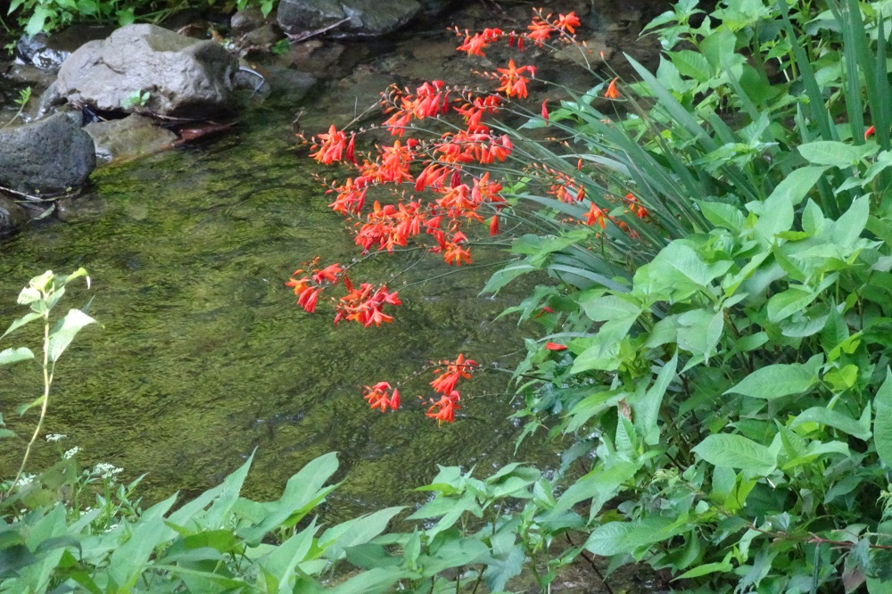

フット: バラード（ヴァイオリンとピアノのための）
19世紀末から20世紀初頭にかけてボストンを中心に活動した作曲家の一派を「（第二次）ニューイングランド楽派」と呼ぶが、前回までのビーチやレフラーもその中にカウントされる。どちらかというと保守的でヨーロッパのロマン派を継承するような作曲家が多く、今回取り上げるアーサー・フットなどはその保守派の代表格かと思われる。録音は少ないとはいえ、かなり昔にMarco Polo/Naxosから主要室内楽作品がまとまって（計3枚）出ており容易に聴くことができる。
ピアノ五重奏曲やピアノ四重奏曲など、高水準でうまく作られていて聴き心地も良いのだが、どこか窮屈な感じがしないでもない。初期ロマン派に似ている云々というのは個人的には退ける理由にはならない（いい曲なら）。だが、この次世代に属するアイヴズが、独自性がないとして反発の対象としたのがまさにこういう当時の主流派だったのだろうかと想像すると、なるほどと思わざるをえない面があるのは確かである。
3枚のアルバムを全部聴いた中で最も印象に残ったのが小品であるというのも作曲家に申し訳ない気もするが、この『バラード』には、自由にさっとデッサンしたような偽りのない美感と霊感が表れていると思う（作曲者もこの曲を気に入っていたとのこと）。8分ほどのメロディアスで抒情的な曲。なお、このアルバムのメインは2曲の『ピアノ三重奏曲』である。『第1番』は初期作品で、第3楽章（アダージョ・モルト）はとても美しい。ただ、情緒的に盛り上がるところでは、そこに至る必然性が少なくやや唐突であるように思う。
Arthur Foote: Ballade
for Violin and Piano, Op. 69
Arden Trio -
Suzanne Ornstein (vn)
Thomas Schmidt (pf)
(1999)
以下の2枚はレフラーの回と同じくDa Vinci四重奏団の演奏である。クナイゼル四重奏団に献呈された『ピアノ五重奏曲』は華麗であり意欲作だというのはわかるが、ピアノの技巧に（筋肉質ではあるものの）常套的な書法が目立つのはちょっと淋しい。個人的にはそれよりも2曲の『弦楽四重奏曲』の方が好みだった。
Arthur Foote: String Quartet No. 3
in D Major, Op. 70
Da Vinci Quartet
(1995)
『弦楽四重奏曲第3番』の方は、たいへん整っており完成度が高いと思う。ここでは先に述べた窮屈さはまったくといって良いほど感じられない。一方『第2番』は、クナイゼル四重奏団による初演(1894年)の後作曲者自身がその出版を取り下げたとあってやや引っ掛かるものがある。だがシューマンの『弦楽四重奏曲第3番』を思わせる第3楽章（主題と変奏）は力の入った佳品だし（この楽章だけ独立して出版された）、メンデルスゾーン風のスケルツォである第2楽章もそれに劣らず光るものがある。『第3番』のスケルツォとも似た所のあるこの第2楽章については、フット自身によってフルートを加えた小品『ノクターンとスケルツォ』に編曲されているのだが、ありがたいことにそれも『ピアノ四重奏曲』をメインとする下のアルバムにちゃんと収録されている。フルートを加えたのは効果的で正解だと思う。
Arthur Foote: Scherzo
from "Nocturne and Scherzo"
Jeani Muhonen Foster (fl)
Da Vinci Quartet
(1995)

(Aug. 26, 2023)